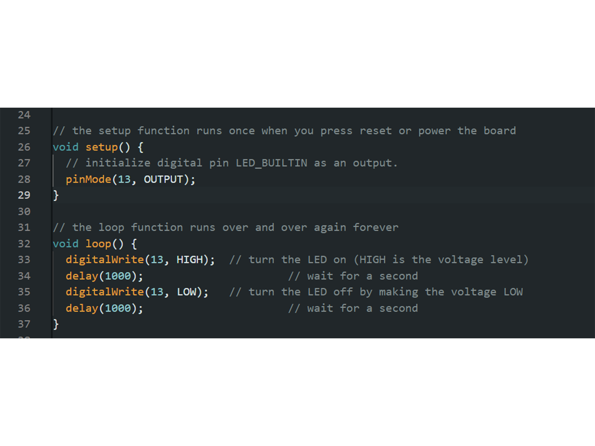
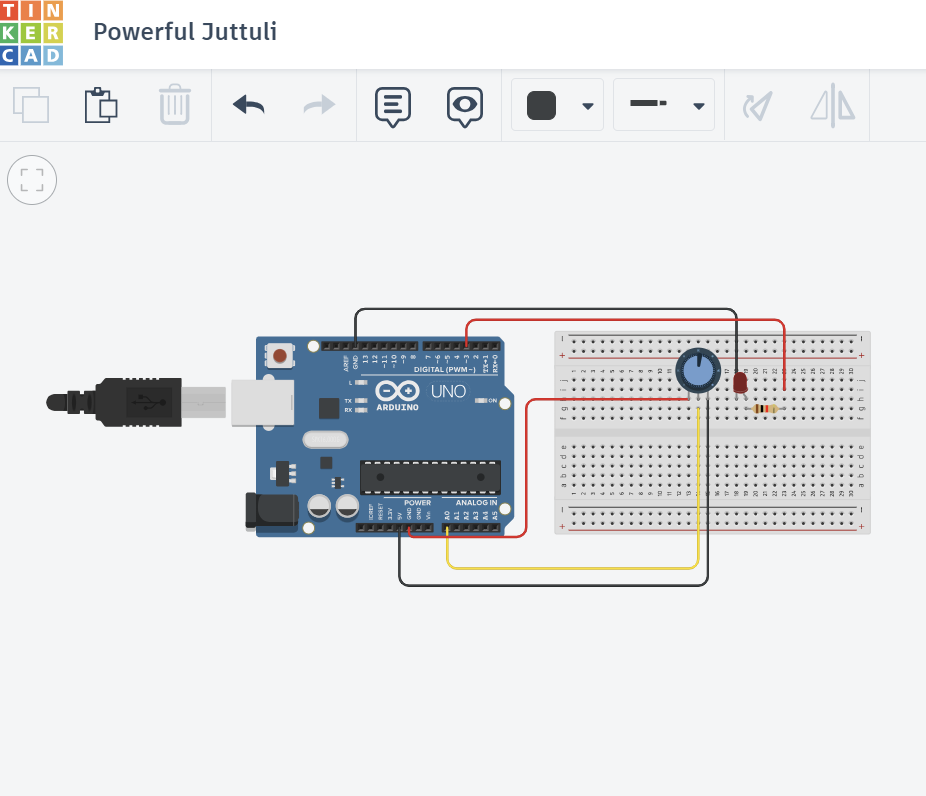
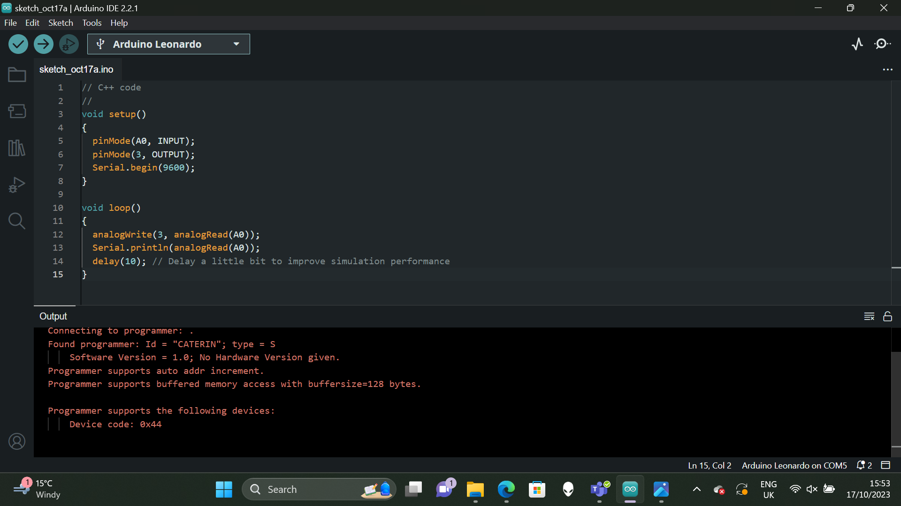
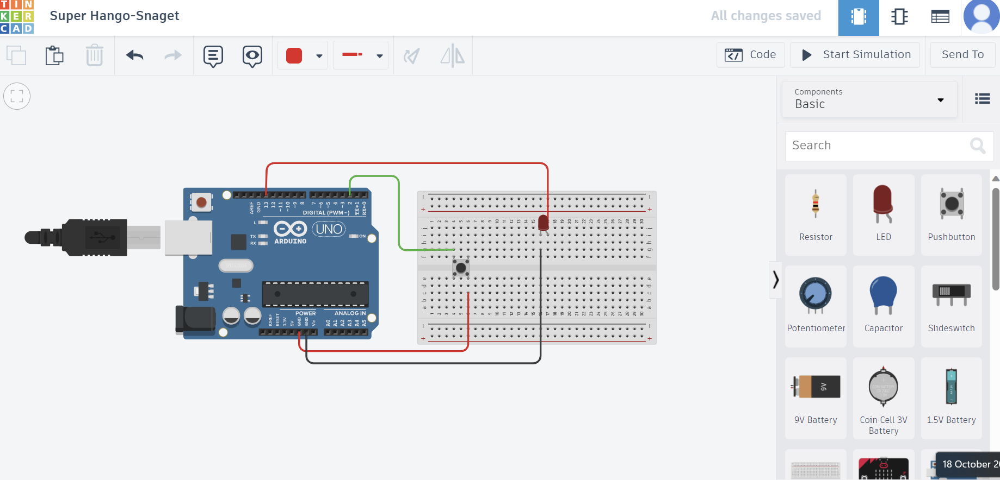
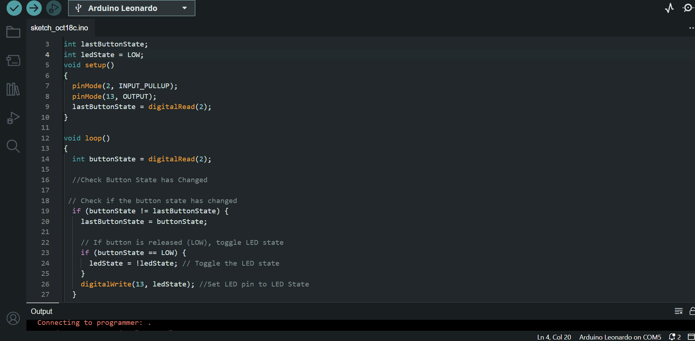
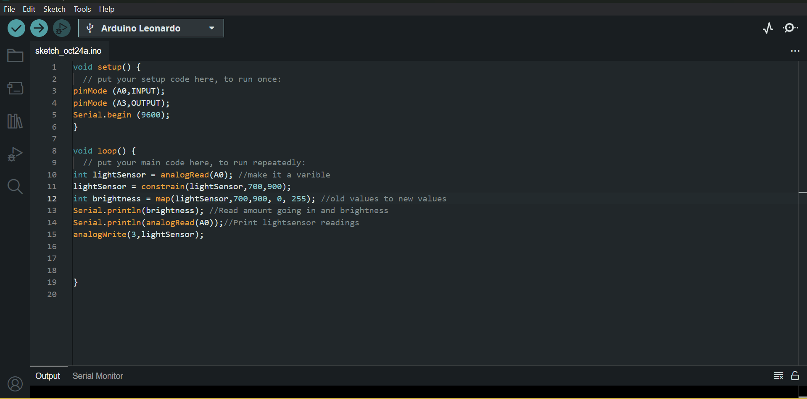
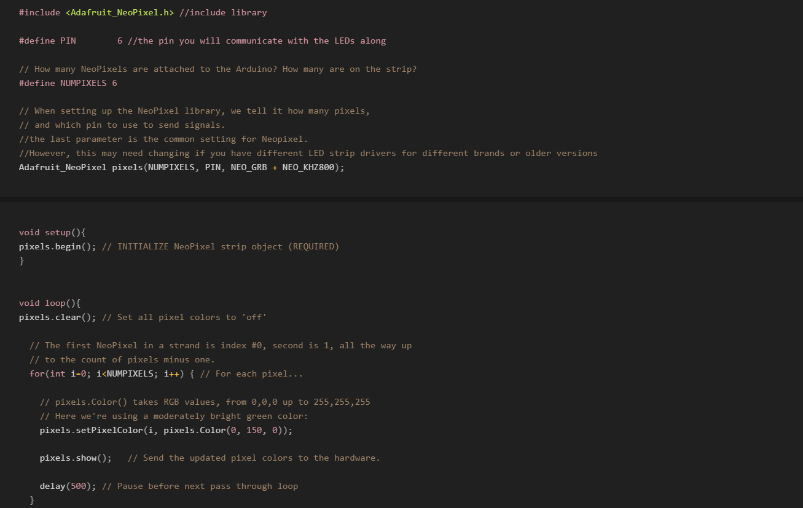

WEEK 1: INTRODUCTION
Progressing from Monday's lesson we used chatGPT to come up with a concept for a design to use on the pen plotter. As a group we generated a type of a map that presented the distance we traveled to uni, how we traveled and the areas we lived through hex color values. We got these values through chatGPTs color coding of those areas/methods. The idea of the project sparked from wanting to present the bias behind AI databases. This was complicated and we didn't manage to complete it in the time frame that we had. However in the future I would like to do more research on the bias behind AI technology especially with its current significant position in contemporary society.
WEEK 2: ARDUINO
Re-imagining Objects
We looked at exploring a new behavior or creating a new interaction and how you can utilize an object in a different way. This feeds into our assessment that is due in January where we will have to produce a recontextualised object.
Bread Boards layout
- All green lines are connected horizontally
- Middle all connect vertically
- The gutter in the middle; they are isolated without connection
Arduino
It can only run one program
Once it's received its code to receive another code you have to override the code or wipe it
Don't take off plastic or foam as it can ruin board
LED Light - Turn OFF and ON
Circuit
.png)
Code

We then learnt how to produce a circuit layout using Tinker Cad that used a resistor and an LED. I found this easy to produce as it was very simple but I am nervous about having to begin coding the circuits.
WEEK 3: OUTPUTS
Using the circuit we produced last week. We created different code to change the state of the LED.
LED Light Intensity.
We created a code that used analogue write to place the light at different intensities of brightness. The values of analogwrite are in between 0-255, 0 being the dullest and 255 being the brightest. In between placing the light at these values the light had a 10 millisecond delay.
Code

LED light Fading
We then created a code that allowed the LED to fade. Using a ‘for’ loop it allows for the LED to gain and drop in intensity. As I wasn’t physically at the lesson this week at first I found it slightly confusing but as the weeks progress I'm sure it’ll make more sense.
Code

🕮
📽WEEK 4: INPUTS
Variables
Variables are names we give to values we want to store. Eg: `int pin = 13;`. These values may take the form of varying different data types.
Potentinometer
Circuit
Code
We coded a serial monitor on tinker cad and then in arduino that allows us to see if the potentiometer is working. The mapping aspect of the code I found complicated.
Button to Turn LED ON and OFF
Circuit
Code
I then coded how to use a button to turn a light switch on and off. The difficulty of the task was coding a way for the light to come on when you press the button once and off when you press the button again. I did this by declaring two integer variables. I found it really challenging to figure out how to write the code.
WEEK 5: SENSORS
Interaction Design Theory
We looked at Brett Victors, ‘Picture Under Glass’ and its commentary on the sacrifice of working without hands and the visual facade that goes along with it. His work on ‘Dynamic Land’ I found really interesting. It is a computer that's in the ceiling that is shown onto scrap paper. The idea behind the computer is that it's interactive, using physical objects to play games etc. I like the way it creates community through technology and this is something I'd like to work towards.
We also looked at Bill Verplank, ‘Interaction Design Framework’. This has helped me think about a bit of a process while thinking of ideas of what I might want to produce and how to execute. At this moment I still have no idea what I want to produce and am focusing on understanding the skills we are being taught in lessons.
LDR (Light Dependent Resistor)
Circuit
Code

We then produced a code similar to when we created a code for the potentiometer last week. It was good to redo as I realized I was still not fully confident in mapping the code.
InfraRed Sensor
The InfraRed sensor bounces back light. It's good for measuring short, precise, repeated changes if there's an object there or not and it measures a high resolution =, detecting edges and small changes. It is bad when in direct sunlight or fluorescent light, at detecting dark materials or environments and measuring longer distances.
Ultrasonic Sensor
The ultrasonic sensor emits a signal that is reflected back. It measures accurate, longer distances and works in environments with external factors like varying light and fog. Its struggles with higher resolution changes in the detected shape, very fast changes due to its slower signal speed and it can be expensive for higher spec sensors.
HC-SR04
Circuit

Code

The HC-SR04 is an ultrasonic sensor. We used the sensor to make a LED to turn up and down in brightness based on distance. It has a Trigger Pin: that sends out a sonic burst which is received back by the sensor when it bounces off an object and an Echo Pin: that then output the time in microseconds the sound wave traveled. The sensor's calculations can be done from scratch in code reading from each digital pin. We installed an external library, ‘New Ping’ to help us code this. I enjoyed using the sensor, although the circuit itself was quite temperamental it will be useful to potentially use this in my project.
Creative Comouting Metaphor Design Example
The livegrid is an example of Creative Computing work that uses metaphor, referring to Bill Bill Verplank’s ‘Interaction Design Framework’.Livegrid understands your environment through a vibrant intuitive aquatic display. Rather than having an actual aquatic system or ecosystem it is a digital display that has a sensor reading your environment's temperature, humidity and C02 Levels. This data is used to present an immersive aquatic ecosystem. As the humidity rises the water changes hue and the plants burgeon. When the C02 levels become hazardous, the fish in the aquatic systems visually show suffering. The displays in the ecosystem are full of metaphors.
WEEK 6: KINETIC
In the lecture we did an overview of theory surrounding electricity. I have included some basic notes below in case they need to be reviewed at any point.
Circuitry - The difference in charge between two points is voltage. There needs to be a difference in charge for electricity to flow.
Resistance - Resistance is measured in OHMS. The more resistance the harder it is for the electricity to flow. OHM'S Law equation calculates the Amps, Resistance and Voltage in relation to each other.
Arduino Electricity - The electricity comes through the pins. On/Off represented by high or low current using its IDE software. The Power comes from a USB or a battery.
DC Motor - It goes in one direction, the speed of movement can be controlled. The direction can be reversed but it requires extra components - a H-bridge. Using a transistor the motor can be controlled in its behavior and its flow.
Transistor - A transistor is an electronic device that can work as a switch. As motors are inductive loads, they can create a reverse voltage when spinning down after you turn them off; it is good practice to add a protection diode into the circuit.
Mosfet Transistor - This is a type of field effect transistor, It can cope with higher voltage loads. It can switch faster than the transistor shown above (Bipolar Transistor).
DC Motor Circuit
Circuit

Code
We created a circuit that stopped and started the circuit in a loop with a second in between. This used a complex circuit board but the coding aspect was quite easy.
Servo Motor Circuit
Circuit
Code

We created a circuit then using a servo motor circuit. The wiring of the circuit was very simple and I enjoyed the coding aspect even though it was more complicated. We were using if statements in order to loop the circuit.
WEEK 7: FABRICATION
In groups of six we produced prototypes of designs out of cardboard. They had to hold a circuit insight that used a function we had already done in class. We decided to make a cardboard cow which had LED’s for eyes and buttons for udders. When the bottom left udder was pushed the LED eyes lit up. The code made it so they stayed on until they were pressed again. This was a fun activity and was challenging to fit the wire inside the cardboard cow we had produced.
Links to resources:
https://wiki.cci.arts.ac.uk/books/facilities
WEEK 8: PROTOTYPING
I connected my arduino to a circuit that controlled a circuit through a potentiometer and a button function. The potentiometer worked well but the button function had trouble with it flickering. I tried to make the button have a smiley face when the button was pressed and a sad face when not. I couldn't figure out the flickering problem but I need to get this to work for my assessment.
WEEK 9: SPECULATIVE AND METAPHOR
Re-Imagined Object Activity:
We began the lesson in groups reimagining objects. We did this by looking at Bill Verplanks theory and used this to reimagine a chair. Thinking about the function of the chair, we thought of its purpose within a space and how through it being so high up it then makes it so you have to buy access to other furniture in order to make it. We then decided to reimagine it in an installation setting in order to make people think about the purpose of buying furniture and different ways of using chairs within a space. This could mean the chairs have pressure sensory on them so when sat on they create red flashing lights and noise which would force the participants to sit in the space in an alternative way.
Neopixels
Neo pixels are an array of multiple lights that can be controlled by one arduino pin. Each light can be controlled individually and are much brighter than the LEDS we use. The adafruit neopixel library is good for programming lights. I have attached both a circuit model and a code of wiring neopixels.
Example

I then did some soldiering which I really enjoyed and I did this for both a three point pin for any sensors and a button. I need to think about how ill soldier my circuit for my invented object.
Re-Imagined Object
For my reimagined object I want to use a metronome that somehow changes its function of beat in order to compose new music. Originally I wanted to do this through audio input but I could do it through an alternative sensor. I could do some sort of light or movement sensor. It could be based on her movement that the metronome ticks at different rates. This could be placed below her to show the movement of her breathing.
WEEK 10: ACCESSIBILITY AND PROTOTYPING 2
Accessibility Design
We had a lecture based on accessibility design and looked at being user design sensitive. This included looking at being Human Design Centered who design for people of their contexts. They understand humans as a more complex system. It's a step beyond user centered design. As well as Universal design who look to be more inclusive of all people. It aims to make design accessible to the greatest number of users as possible. We then looked at pluralism, a feminist standpoint theory. To resist a single or totaling universal point of view. It is impossible to realistically totalis humanity. It made me think about how I need to be more user sensitive in my designs that I make, especially when creating digital interfaces.
State Control, Switch Cases and Functions
Switch Cases
We then coded a lightbulb based on a switch case function. It had four different cases which had set statements of the lightbulbs brightness with a default of it being off. We began this by writing a code which just had the case statements of the lightbulb state.
Button Code
We then produced a code that programmed the button input on its own. So at this point I have two codes. One controlling input and one output. The button programmed the code to produce a serial print that told us it was “on” when pressed and “off” when not.
Full Code
We then put both of the codes together to produce a circuit that when the button is pressed it has different states of brightness (pressed four times). However I didn't manage to find a way that then loops this function so when the serial print reaches 4 it just reaches a default of 0.